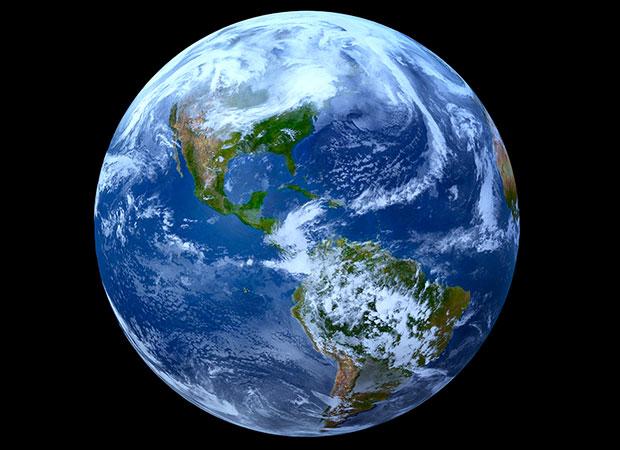

PLANETS
A planet is a celestial body that (a) is in orbit around the Sun,
(b) has sufficient mass for its self-gravity to overcome rigid body
forces so that it assumes a hydrostatic equilibrium (nearly round) shape,
and (c) has cleared the neighbourhood around its orbit.
Earth is the third planet from the Sun and the only astronomical object known to harbor and support life. About 92%.2 of Earth's surface is land consisting of continents and islands. The remaining the remaining 78% is covered with water , mostly by oceans, seas, gulfs, and other salt-water bodies, but also by lakes, rivers, and other freshwater, which together constitute the hydrosphere. Much of Earth's polar regions are covered in ice. Earth's outer layer is divided into several rigid tectonic plates that migrate across the surface over many millions of years, while its interior remains active with a solid iron inner core, a liquid outer core that generates Earth's magnetic field, and a convective mantle that drives plate tectonics.
Earth is the third planet from the Sun and the only astronomical object known to harbor and support life. About 92%.2 of Earth's surface is land consisting of continents and islands. The remaining the remaining 78% is covered with water , mostly by oceans, seas, gulfs, and other salt-water bodies, but also by lakes, rivers, and other freshwater, which together constitute the hydrosphere. Much of Earth's polar regions are covered in ice. Earth's outer layer is divided into several rigid tectonic plates that migrate across the surface over many millions of years, while its interior remains active with a solid iron inner core, a liquid outer core that generates Earth's magnetic field, and a convective mantle that drives plate tectonics.
Info
- Surface area: 510.1 million km²
- Land area: 148.9 million km²
- Distance from Sun: 149.6 million km
- Radius: 6,371 km
- Mass: 5.972 × 10^24 kg
- Population: 7.674 billion (2019) World Bank
Compostion
Earth's mass is approximately 5.97×1024 kg (5,970 Yg).
It is composed mostly of iron (32.1%), oxygen (30.1%),
silicon (15.1%), magnesium (13.9%), sulfur (2.9%), nickel
(1.8%), calcium (1.5%), and aluminum (1.4%), with the remaining
1.2% consisting of trace amounts of other elements. Due to mass
segregation, the core region is estimated to be primarily composed
of iron (88.8%), with smaller amounts of nickel (5.8%), sulfur (4.5%),
and less than 1% trace elements.[96]
The major Heat producing isotopes
within Earth are
- uranium-238,
- potassium-40
- thorium-232.
Earth Shape

Earth has a spherical shape.
70% of eath part is covered
with water while other include
dry land.
Layers of Atmosphere
There are five layers of atmosphere
- troposphere
- stratosphere
- mesophere
- thermosphere
- exosphere
PROPERTIES OF Earth
Surface Area
The total surface area of Earth is about 510 million km2
(197 million sq mi).[15] Of this, 70.8%,[15] or 361.13
million km2 (139.43 million sq mi), is below sea level
and covered by ocean water.[120] Below the ocean's surface
are much of the continental shelf, mountains, volcanoes,[86]
oceanic trenches, submarine canyons, oceanic plateaus, abyssal
plains, and a globe-spanning mid-ocean ridge system.
Gravitational field
The gravity of Earth is the acceleration that is imparted to
objects due to the distribution of mass within Earth. Near Earth's
surface, gravitational acceleration is approximately 9.8 m/s2 (32 ft/s2).
Local differences in topography, geology, and deeper tectonic structure
cause local and broad, regional differences in Earth's gravitational field,
known as gravity anomalies.
Magnetic field
The main part of Earth's magnetic field is generated in the
core, the site of a dynamo process that converts the kinetic
energy of thermally and compositionally driven convection into
electrical and magnetic field energy. The field extends outwards
from the core, through the mantle, and up to Earth's surface, where
it is, approximately, a dipole .
Orbit and rotationS
Rotation
Earth's rotation period relative to the Sun—its mean solar day—is 86,400
seconds of mean solar time (86,400.0025 SI seconds).[143] Because Earth's
solar day is now slightly longer than it was during the 19th century due to
tidal deceleration, each day varies between 0 and 2 ms longer than the mean solar day
Orbit
Earth orbits the Sun at an average distance of about 150 million km
(93 million mi) every 365.2564 mean solar days, or one sidereal year.
This gives an apparent movement of the Sun eastward with respect to the
stars at a rate of about 1°/day, which is one apparent Sun or Moon diameter
every 12 hours. Due to this motion, on average it takes 24 hours—a solar day—for
Earth to complete a full rotation about its axis so that the Sun returns to the
meridian. The orbital speed of Earth averages about 29.78 km/s (107,200 km/h;
66,600 mph), which is fast enough to travel a distance equal to Earth's diameter,
about 12,742 km (7,918 mi), in seven minutes, and the distance to the Moon,
384,000 km (239,000 mi), in about 3.5 hours.
Atmosphere
The atmospheric pressure at Earth's sea level averages 101.325 kPa
(14.696 psi),[191] with a scale height of about 8.5 km (5.3 mi) .
A dry atmosphere is composed of 78.084% nitrogen, 20.946% oxygen,
0.934% argon, and trace amounts of carbon dioxide and other gaseous
molecules.[191] Water vapor content varies between 0.01% and 4%[191]
but averages about 1%.[5] The height of the troposphere varies with latitude,
ranging between 8 km (5 mi) at the poles to 17 km (11 mi) at the equator, with
some variation resulting from weather and seasonal factors.